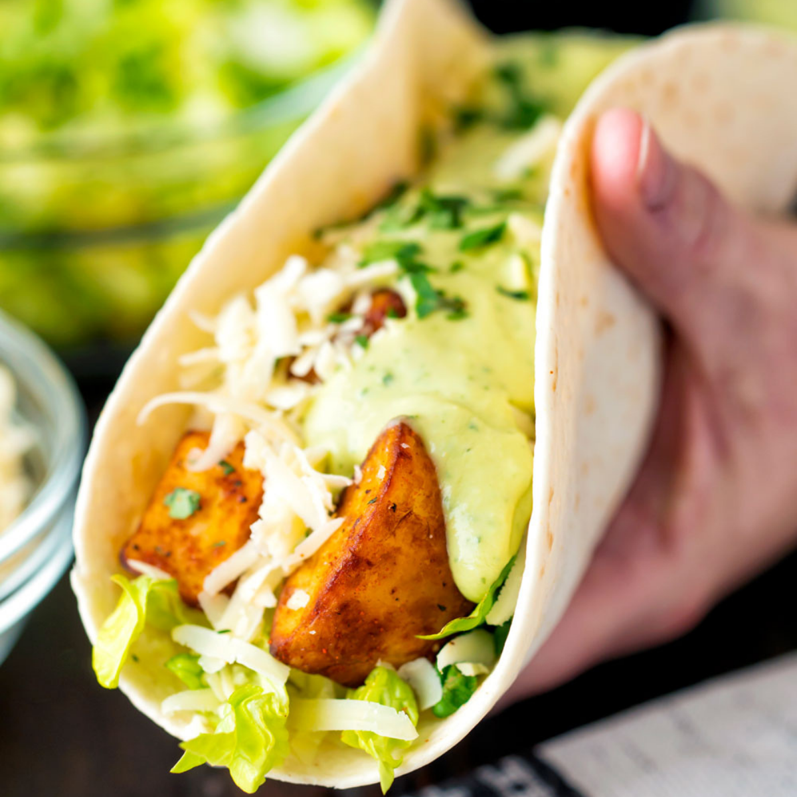

Spicy Potato Soft Tacos

Description
Spicy potato soft tacos are an easy meal that everyone in the family will love. This yummy take on a Taco Bell favorite will keep you from hitting the drive thru and satisfy everyone in your family. Plus, they are a great way to use up leftovers or fun way to spice up ordinary breakfast potatoes.
Ingredients
- Wheat or corn tortilla
- Iceberg lettuce
- Breakfast Potatoes
- Shredded cheddar cheese
Steps
- Prepare: Prepare the breakfast potatoes. If using left over breakfast potatoes then, you could warm them in the microwave for about 30 to 60 seconds or until warmed through.
- Cook: Heat your shells in the microwave for about 30 seconds. When you use corn tortillas, this also helps to soften them and make them a bit more flexible.
- Scoop: Once the potatoes and shells are ready, scoop in about 3 tablespoons of potatoes into each tortilla.
- Toppings: Add toppings of your choice!